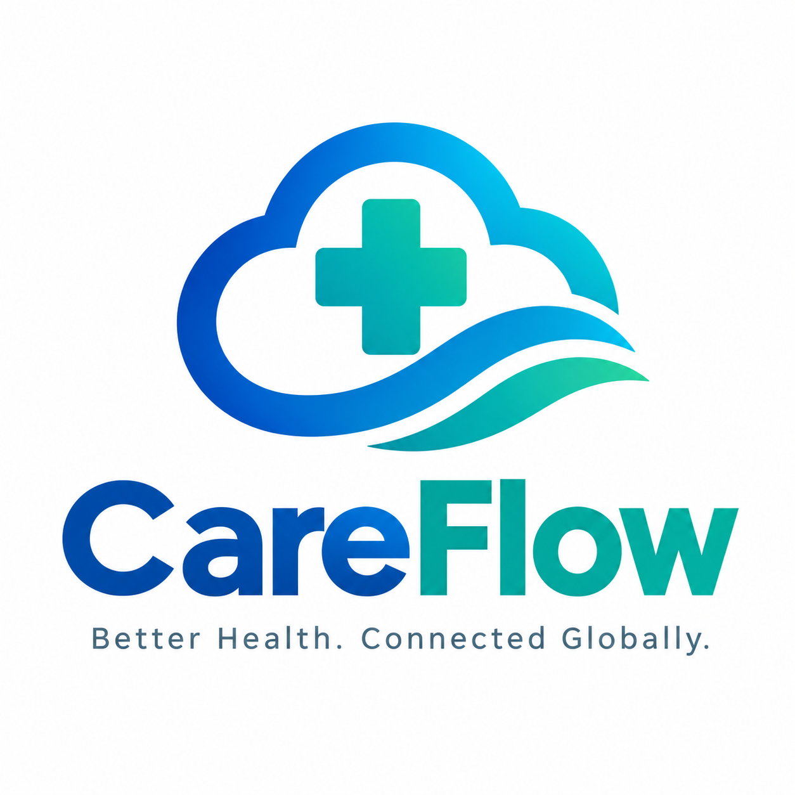
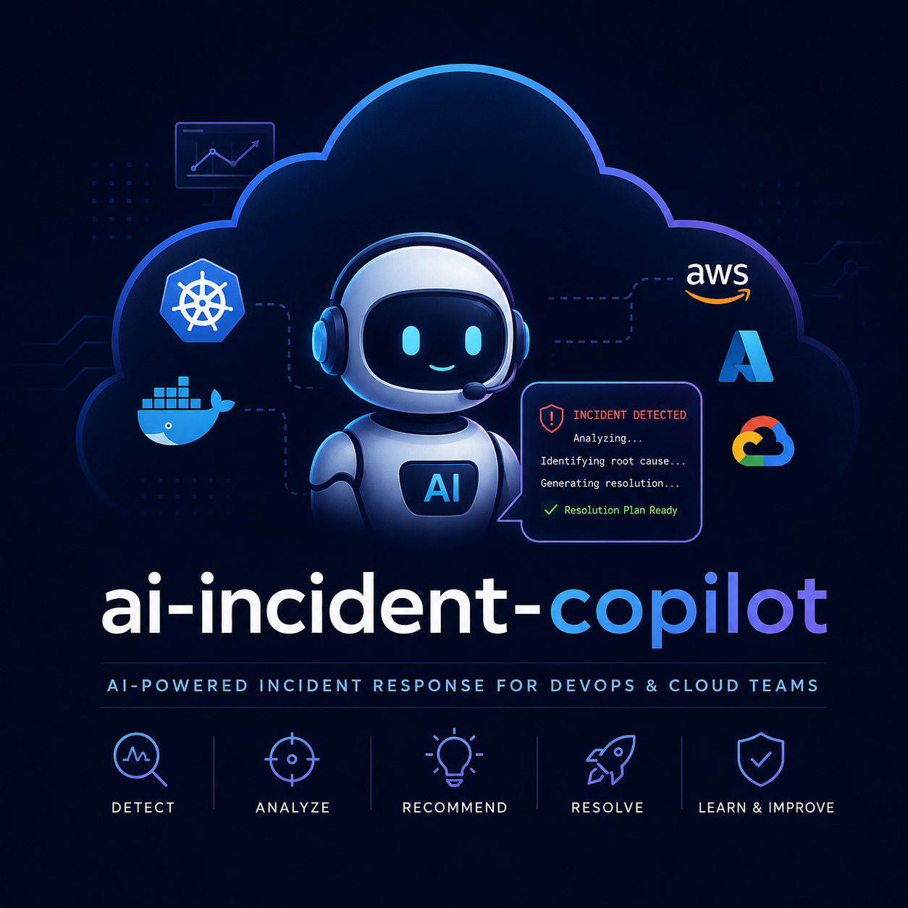
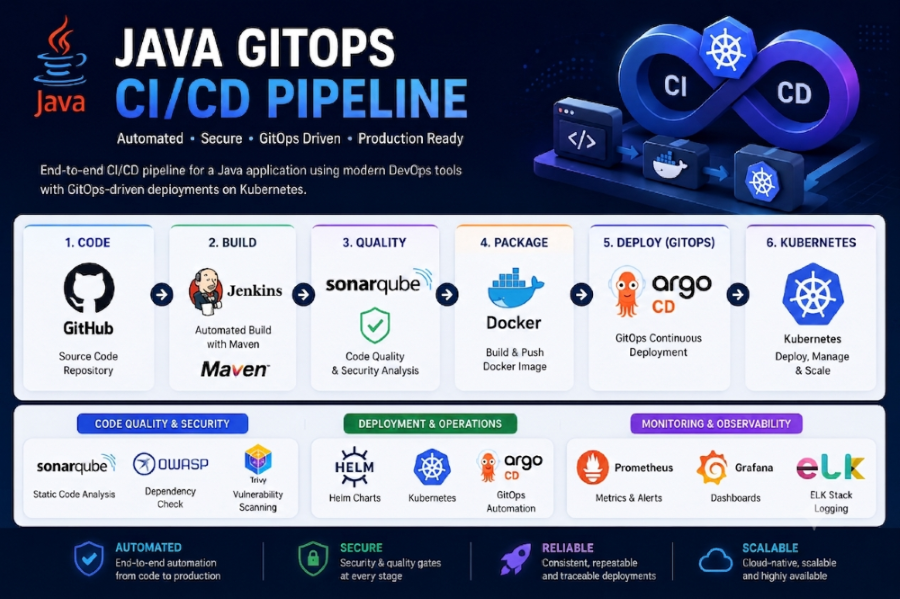
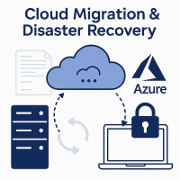
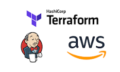
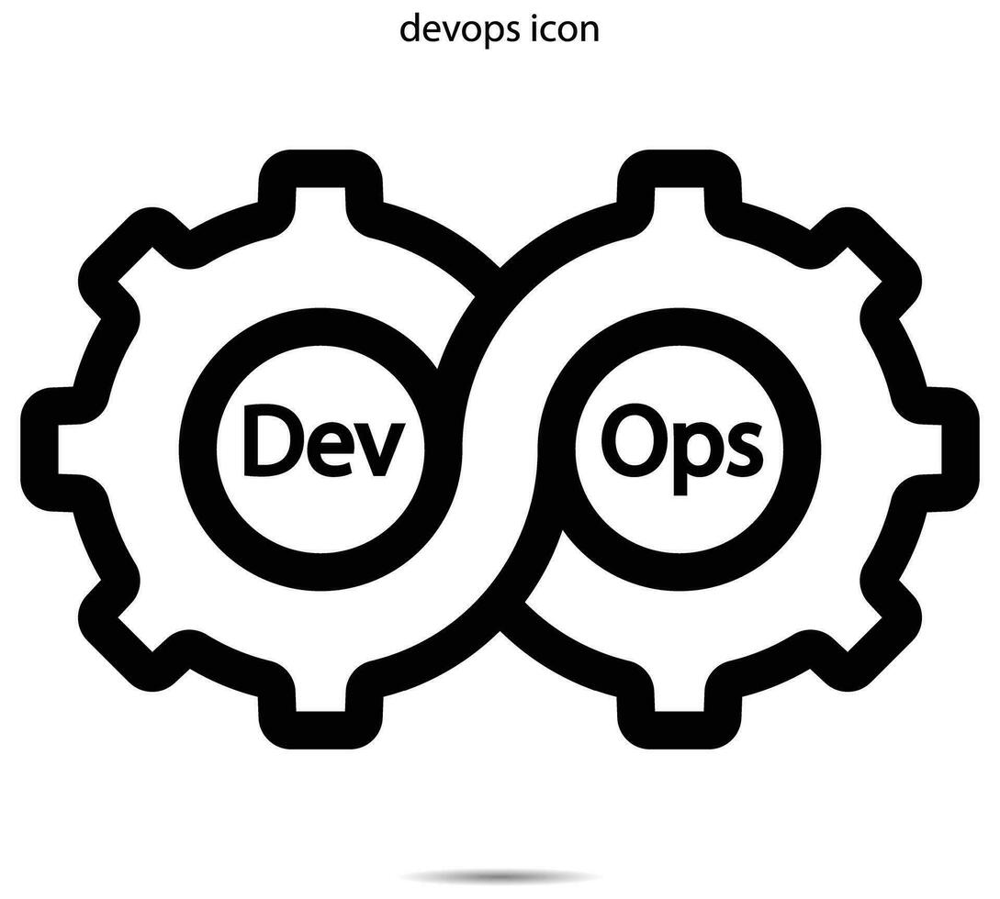

ENGINEERING WORK
Selected systems
Architecture-focused case studies across platform engineering, cloud infrastructure, DevOps, GitOps and reliability.

FEATURED · HEALTHCARE CLOUD
CareFlow — Enterprise Multi-Region Healthcare Cloud Platform
A featured healthcare cloud platform project focused on multi-region architecture.
Explore project →AI-Infra-Agent
AI-assisted infrastructure analysis for cloud environments.

AI-Incident-Copilot
Operational assistance for incident investigation and root-cause analysis.

Java GitOps CI/CD Platform
Jenkins, Maven, SonarQube, Helm, Argo CD and Kubernetes with quality gates.

Cloud Migration & Disaster Recovery
Migration and disaster-recovery engineering across AWS and Azure using Terraform and Ansible.

Terraform on AWS
Terraform infrastructure example for AWS, with a reference CI delivery pattern.

Jenkins Terraform Pipeline
A parameterized Jenkins pipeline for the Terraform lifecycle on AWS.